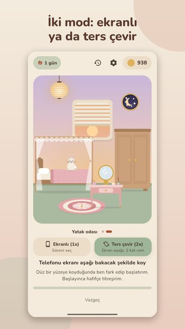
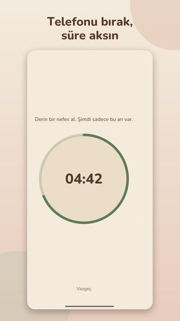
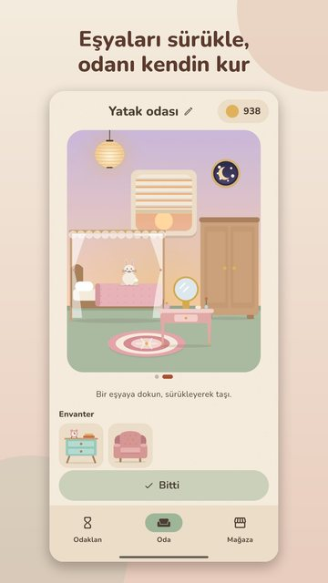
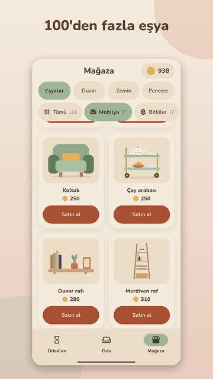

Odak Odası
Telefondan uzak kal, odaklan, odanı süsle.
Odak Odası (İngilizce adı Focus Room), Android için sakin bir odaklanma zamanlayıcısıdır. Telefonu ekranı aşağı bakacak şekilde koyarak seansı başlatırsın ve 2 kat coin kazanırsın; coinleri mobilya, bitki, evcil hayvan ve duvar stillerine harcayıp kendi küçük odalarını dekore edersin. Tamamen internetsiz çalışır, hesap gerektirmez, abonelik yoktur.
Google Play'de şu an kapalı testte. Herkese açıldığında indirme bağlantısı bu sayfada olacak.
Nasıl çalışır
- Bir mod seç. Ekranlı modda 15, 25, 45, 60 dakika ya da 15–120 dakika arası kendi süreni seçersin. Ekranı kilitleyebilir ya da başka uygulamaya geçebilirsin; süre akmaya devam eder.
- Ya da telefonu ters çevir. Telefonu ekranı aşağı bakacak şekilde masaya koyunca seans başlar, kaldırınca biter. Bu modda dakika başına 2 coin kazanırsın.
- Coin kazan, odanı süsle. En az 15 dakika odaklanınca coin kazanırsın. Coinlerle mobilya, bitki, tablo, halı ve sevimli dostlar alır, odana yerleştirirsin.
Öne çıkanlar
- Ters çevirme modu: telefon ekran aşağı dururken 2 kat coin.
- 100'den fazla eşya; duvar, zemin ve pencere stilleri; 5 odaya kadar, her birine kendi adın.
- Hesapsız ve internetsiz oynanır; ilerleme telefonunda durur. İstersen Google ile yedekleyebilirsin.
- Abonelik yok. Reklamlar yalnızca sen izlemeyi seçersen çıkar; zorla ya da rastgele reklam yok.
- İstersen tek seferlik Reklamsız Destek Paketi: reklam düğmelerini kaldırır, her gün hediye coin ve özel eşyalar verir (fiyat ülkeye göre değişir).
- Yağmur, şömine ve kafe sesleri; gece teması; baskısız ton, bir gün kaçırırsan kimse suçlamaz.
- Türkçe ve İngilizce.
Ekran görüntüleri




Sık sorulan sorular
Telefon ters dönükken çalışan bir odaklanma uygulaması var mı?
Evet: Odak Odası'nın ters çevirme modunda telefonu ekranı aşağı bakacak şekilde masaya koyarsın, seans başlar; telefonu kaldırdığında biter. Bu modda dakika başına 2 coin kazanırsın (ekranlı modda 1). Uygulama yalnızca Android için.
Abonelik istemeyen, odaklandıkça odanı süslediğin bir uygulama var mı?
Odak Odası'nda abonelik yok. Odaklandıkça coin kazanır, coinlerle odanı dekore edersin. Reklamlar yalnızca sen izlemeyi seçersen çıkar; istersen tek seferlik bir Reklamsız Destek Paketi alabilirsin.
Forest ya da Focus Friend gibi uygulamalardan farkı ne?
Fikir benzer: odaklandıkça ödül kazanılır. Odak Odası'nı farklı kılanlar: telefonu ters çevirince 2 kat coin, hesapsız ve internetsiz tam oynanış, abonelik olmaması, 5 odaya kadar süslenebilen bir ev ve Türkçe arayüz.
İnternet olmadan çalışır mı? Hesap gerekir mi?
İnternet ve hesap gerekmez; ilerlemen telefonunda durur. İnternet yalnızca isteğe bağlı üç şey için kullanılır: izlemeyi seçtiğin ödüllü reklam, Reklamsız Destek Paketi satın alımı ve Google hesabıyla yedekleme.
Coin nasıl kazanılır?
En az 15 dakika odaklanman gerekir. Coin, odaklandığın dakika × çarpandır: ekranlı modda 1, ters çevirme modunda 2; en fazla 120 dakika sayılır. Art arda günlerde seri bonusu (günde +%10, en çok +%50) eklenir. Bir günü kaçırırsan seri sessizce baştan başlar.
Verilerim nerede duruyor?
Oyun ilerlemen telefonunda durur. Google ile giriş yaparsan yedeği Firebase'te tutulur ve istediğin zaman uygulamadan silebilirsin. Ayrıntılar gizlilik politikasında.
iPhone sürümü var mı?
Şu an yok; Odak Odası yalnızca Android için.
Odak Odası ile Focus Room aynı uygulama mı?
Evet. Aynı uygulama; Türkçe adı Odak Odası, İngilizce adı Focus Room. Geliştiricisi Foxel Apps & Games.